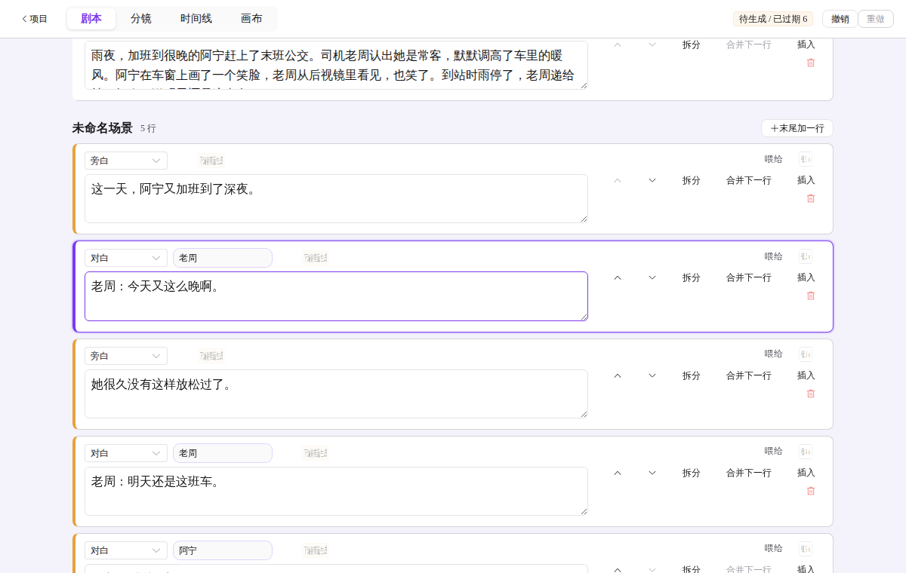
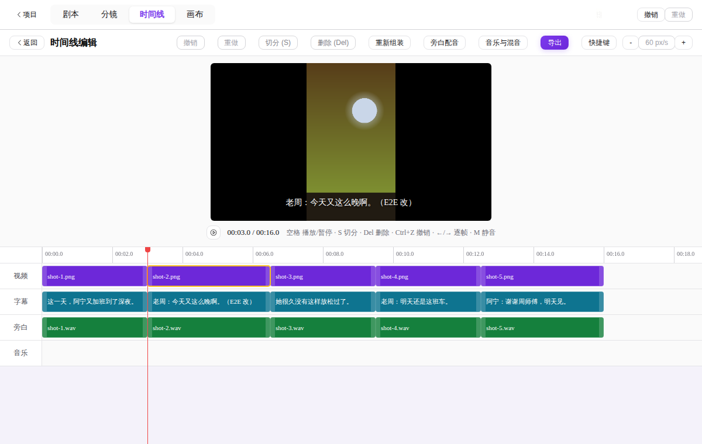
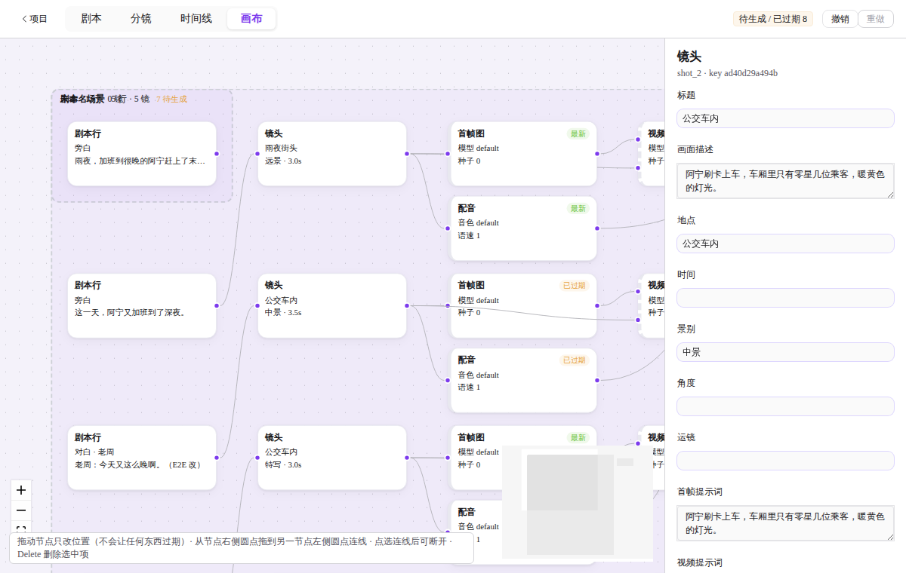

用你自己的 Key
接入阿里云百炼，文本、图像、视频、配音都走你自己的账号，Key 用系统密钥存储加密保存，界面只显示末 4 位。首次打开有引导向导，粘贴 Key 后自动做连通测试。
四个视图读写同一张项目图。在剧本里改一句台词，分镜、时间线和画布马上跟着变；撤销也是全局的。




接入阿里云百炼，文本、图像、视频、配音都走你自己的账号，Key 用系统密钥存储加密保存，界面只显示末 4 位。首次打开有引导向导，粘贴 Key 后自动做连通测试。
每次生成先估价再确认，可设月度花费上限。花费页按日、模型汇总，逐任务列出，可导出 CSV。
出图、出视频进入持久化队列：限并发、遇限流自动退避、断点续传。生成结果完成即下载到本机，重开软件后自动续上未完成的任务。
改了一个镜头，只重新生成和渲染这一镜，其余直接复用缓存，省时也省钱。
空格播放、S 切分、Ctrl+Z 撤销、逐帧移动；分镜工作台里 R 重新生成、Alt+1~4 选候选、Tab 做 A/B 对比。键位可自定义。
一键为旁白配音，字幕按词对齐，片长按真实音频计算。音乐轨可导入自己的配乐，支持循环铺满、音量与人声压低。
自带渲染核心与 ffmpeg，可选分辨率、帧率与编码器，支持显卡硬件编码。中文路径、带空格的路径都没问题。
没有 Key 也能先上手：一键打开五镜示例短剧，四个视图都能点一遍，不调用任何 AI。
导出的成片默认带“AI生成”画面标识和文件元数据标识，方便合规发布。
写下想法，生成剧本和角色表。
拆成镜头，逐镜出首帧图和视频。
在时间线上配音、加字幕、铺配乐。
本机渲染，得到可发布的 MP4。